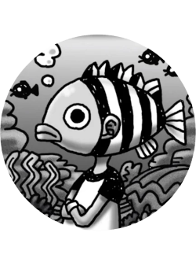

Sobre
One Piece (ワンピース, Wan Pīsu?) é um mangá de aventura pirata escrito e desenhado por Eiichiro Oda. A obra é conhecida por empregar temas coloridos e criativos que são retirados da mitologia clássica, da política e de aspectos musicais. Também é misturada com a tradição pirata e a fórmula shonen.
Lançado em julho de 1997, One Piece já publicou 1121 capítulos (reunidos em 110 volumes tankōbon) e gerou uma enorme franquia, incluindo uma adaptação para anime da Toei Animation, muitos filmes e inúmeras outras peças de mercadoria. Desde o final dos anos 2000, é reconhecido como o mangá mais popular do Japão, sendo até mesmo creditado pelo Guinness World Records como a história em quadrinhos de um único autor mais vendida do mundo.
One Piece é dividido em duas metades: Mar da Sobrevivência: Saga Super Novatos (サバイバルの海 超新星編, Sabaibaru no Umi: Chōshinsei-hen?), e O Mar Final: A Saga do Novo Mundo (最後の海 新世界編, Saigo no Umi: Shinsekai-hen?).

Autor
Eiichiro Oda
Eiichiro Oda, nascido em 1º de janeiro de 1975 na cidade de Kumamoto, província de Kumamoto, no Japão, é um mangaká profissional, mais conhecido como o criador do mangá One Piece.
Escritor e artista dedicado desde a adolescência, Oda começou a trabalhar para a Weekly Shonen Jump da Shueisha aos 17 anos e atualmente é um dos mangakás mais proeminentes do mundo, ganhando cerca de ¥3,1 bilhões (US$ 23 milhões) por ano. Apesar de sua agenda de trabalho rigorosa, ele mantém correspondência constante com os fãs (e o público em geral) por meio de entrevistas formais e canais informais, como suas colunas na SBS .
Sinopse
One Piece segue Monkey D. Luffy e sua tripulação, os Piratas do Chapéu de Palha ( Mugiwaras ), explorando a Grand Line em busca do tesouro supremo, o One Piece, para se tornar o Rei dos Piratas. Ao longo da jornada, Luffy, que ganhou poderes de borracha ao comer uma Akuma no Mi, enfrenta inimigos poderosos, governos corruptos e descobre mistérios sobre o Século Perdido
, com a tripulação enfrentando inimigos de alto nível como os Quatro Imperadores do Mar (Yonkou).
Veja o Trailer do Anime
Veja o Trailer do Live action
Personagens
- Monkey D. Luffy
- Roronoa Zoro
- Nami
- Ussop
- Sanji
- Neferttari Vivi
- Tony Tony Chopper
- Nico Robin
- Brook
- Cutty Flam "Franky"